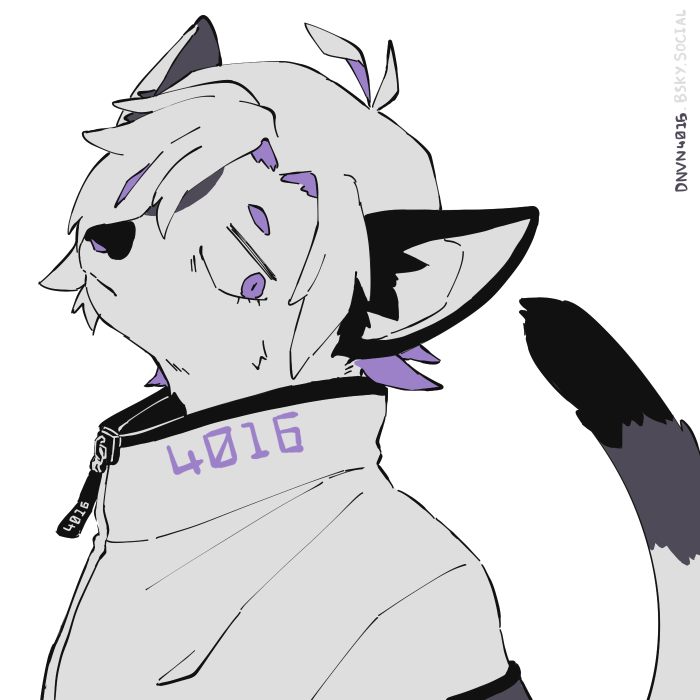

Webmaster

- Name
- Quails or Donovan
- Age
- 30-something
- Gender
- ???
- Pronouns
- they/them or he/him
Website
This site was originally established in 2022, intended as a hub for various side projects that were only every half finished. Not wanting the domain to go to waste (especially since I was still paying for the web hosting) I decided to convert it into a personal homepage in 2025. I've always strugged with social media, so I'm hoping building and maintaining my own website will make my online experience more comfortable.
quailmail.moe is coded with HTML, CSS and PHP in VS Code. The repository is publicly available on GitHub.